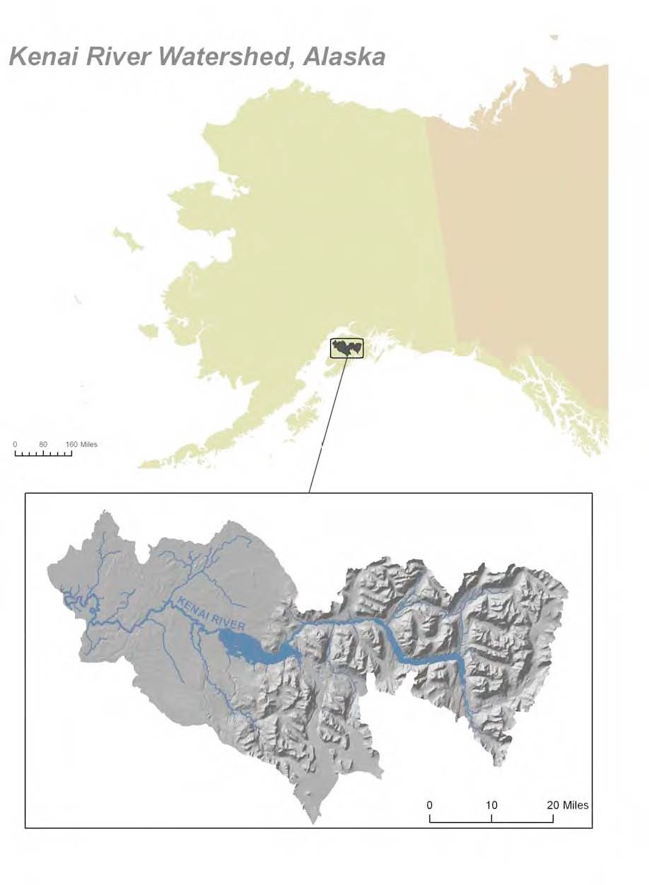
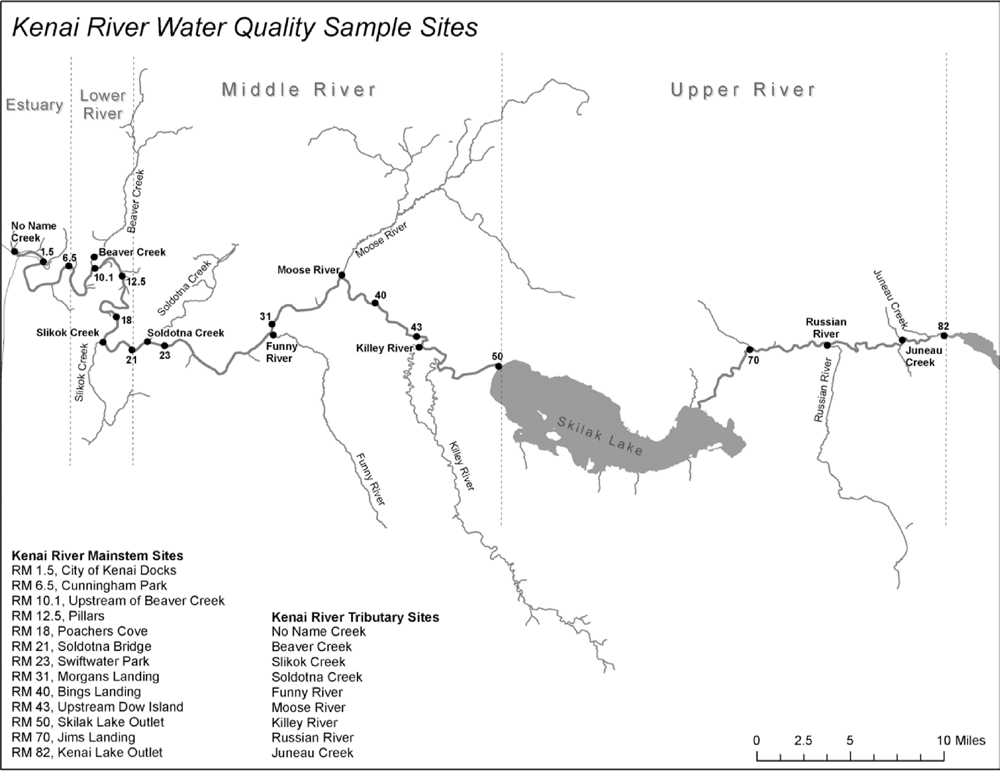

2 Study Area
<<<<<<< HEAD
2.1 Description
Located in southcentral Alaska, the Kenai River is part of the Cook Inlet Basin and is linked to the surrounding communities through sport and commercial fishing, tourism, recreation, and the propagation of fish and wildlife (Figure fig-map1). Five species of Pacific salmon flourish in the Kenai River Watershed, with sockeye (red) and Chinook (king) salmon as the primary species of interest for harvest in subsistence, sport, commercial, and personal use fisheries (Schoen et al. 2017). The Kenai River his historically produced 80% of the sockeye harvested in Cook Inlet (Dorava and Milner 2000).
Surface runoff, groundwater composition, natural minerals, aquatic plants and animals, and human activities can affect water quality in this area. Potential sources of pollution from humans include gasoline powered boat engines, agriculture, mining, street runoff, and perforated septic tanks (Glass, RL 1999; Reeves et al. 2018; EPA 2011).
2.2 Figures/maps
2.2.1 Online Map of Sample Sites
Access ArcGIS Online map at https://arcg.is/0LXGSf


2.3 Sampling sites descriptions/photos
Field sampling sites described in Figure fig-map2 are introduced below with a photo a coordinates for each location.
2.3.1 Tributary Sites
A brief description of each of the tributary stem field sampling sites, along with coordinates and a photo.
2.3.2 Main Stem Sites
This section will include a brief description of each of the main stem field sampling sites, along with coordinates and a photo.
3
4 Study Area
4.1 Description
Located in southcentral Alaska, the Kenai River is part of the Cook Inlet Basin and is linked to the surrounding communities through sport and commercial fishing, tourism, recreation, and the propagation of fish and wildlife (Figure fig-map1). Five species of Pacific salmon flourish in the Kenai River Watershed, with sockeye (red) and Chinook (king) salmon as the primary species of interest for harvest in subsistence, sport, commercial, and personal use fisheries (Schoen et al. 2017). The Kenai River his historically produced 80% of the sockeye harvested in Cook Inlet (Dorava and Milner 2000).
Surface runoff, groundwater composition, natural minerals, aquatic plants and animals, and human activities can affect water quality in this area. Potential sources of pollution from humans include gasoline powered boat engines, agriculture, mining, street runoff, and perforated septic tanks (Glass, RL 1999; Reeves et al. 2018; EPA 2011).
4.2 Figures/maps
4.2.1 Online Map of Sample Sites
Access ArcGIS Online map at https://arcg.is/0LXGSf
4.3 Sampling sites descriptions/photos
Field sampling sites described in Figure fig-map2 are introduced below with a photo a coordinates for each location.
4.3.1 Tributary Sites
A brief description of each of the tributary stem field sampling sites, along with coordinates and a photo.
4.3.2 Main Stem Sites
This section will include a brief description of each of the main stem field sampling sites, along with coordinates and a photo.
cb4283d25c8f6f21c969c7895136d6d68bddc50e